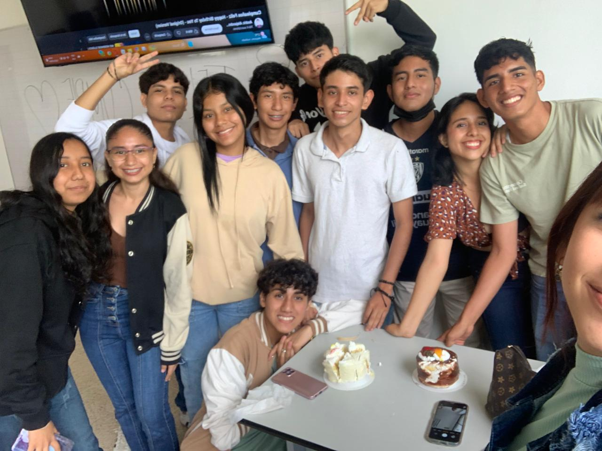

Proyecto Final
¡Hola y Bienvenidos a nuestra página!
Somos un grupo de cinco estudiantes de primer semestre de Ingeniería de Software, unidos por la pasión por la tecnología y el desarrollo de software. Cada uno de nosotros aporta un toque especial al equipo, con intereses muy variados que van desde los videojuegos y el anime hasta la moda, la música pop, el cine y las series. Nuestra diversidad no solo nos hace aprender unos de otros, sino que también enriquece nuestras ideas y proyectos, logrando una combinación única de creatividad y habilidad técnica.
Para nosotros, la programación es mucho más que líneas de código; es una herramienta poderosa para transformar ideas en realidad. Aunque estamos apenas comenzando en este fascinante mundo del software, tenemos claro que el esfuerzo y la dedicación nos llevarán lejos. A veces, alguno de nosotros puede ser un poco olvidadizo o distraído, ¡pero eso es parte del viaje! Aprendemos de cada reto y estamos emocionados por todo lo que nos espera.
